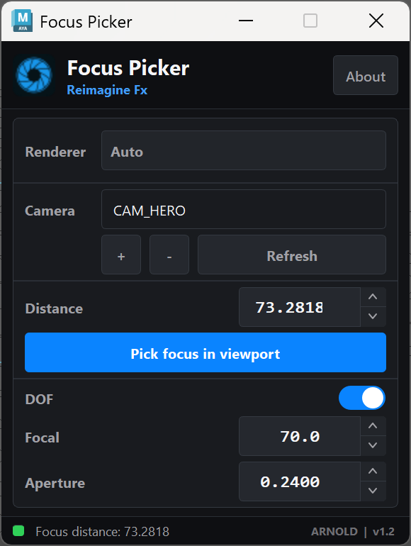
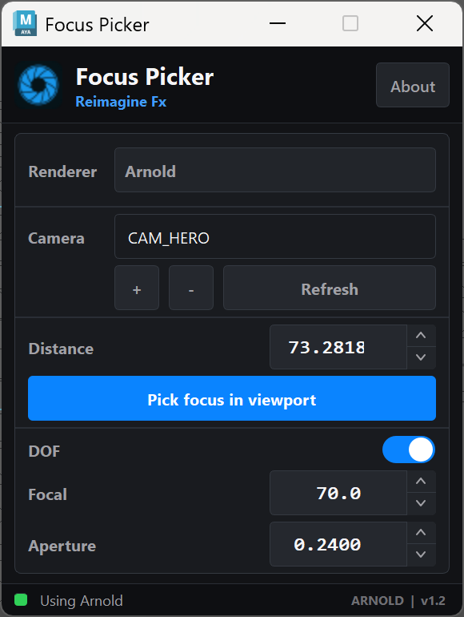
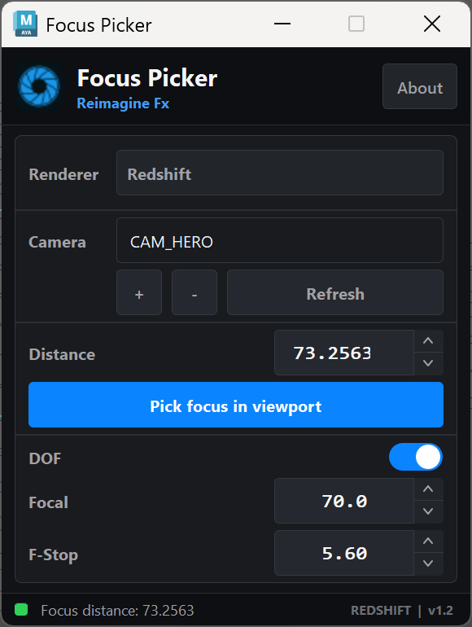

Click the visible surface.
Use the shot itself. No locator setup and no focus-distance guesswork.
Pick any visible surface in the Maya viewport. Focus Picker writes the camera distance, then keeps depth of field, focal length, and renderer-specific lens controls within reach.
v1.2 / Windows / compact PySide6 panel



Press Pick focus in viewport, then click the point that should read sharp. The active camera gets the measured focus distance from the real viewport ray.
Use the shot itself. No locator setup and no focus-distance guesswork.
Arnold or Redshift receives the value through the camera controls it already uses.
Auto, Arnold, and Redshift share the same panel. Only the renderer-specific aperture control changes: aperture radius for Arnold, F-stop for Redshift.
The download has one self-contained plugin folder and a one-page PDF. Copy the folder into Maya's scripts directory, then add the shelf button.
Yes. Choose Arnold or Redshift directly, or leave the renderer on Auto so the panel follows Maya's current renderer.
The core workflow stays the same. Arnold exposes aperture radius; Redshift exposes camera F-stop.
Yes. Distance, focal length, aperture, and F-stop accept typed values, arrow steps, and Maya-style label scrubbing.
Yes. Focus Picker watches the selected camera and updates its controls when supported camera attributes change.
Focus Picker turns a viewport click into the camera distance you need, with Arnold and Redshift lens controls beside it.
Get Focus Picker on Gumroad